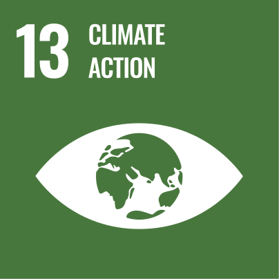
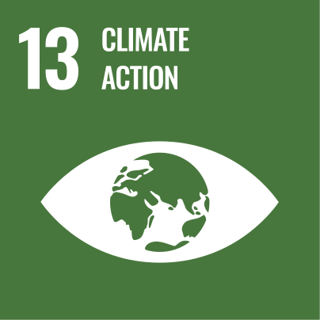
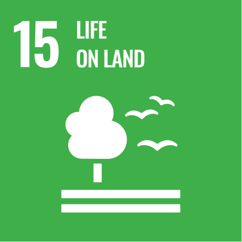
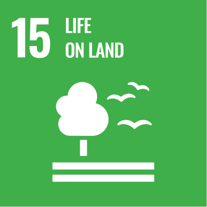

Daniel Harrison
Harro - A user guide and manual
One-page résumé
LinkedIn:
daniel-harrison-9b86811
I derive professional satisfaction from:
-
Having the trust of the Executive …
That I will keep them informed, prioritise what needs doing
and the results will be of high quality -
Having the trust of Engineering …
That I am bringing the right tools to the table for our success
-
Having the expertise to work sustainably …
For myself, the teams and the organisation
What is important, for myself … and probably everyone
-
Collaboration
I like helping teams to work better together
-
Authenticity and Trust
I believe in being trustworthy and trusting. I seek the same from others
-
Autonomy and Agency
I will want it for myself, for you, and our teams
-
Innovation and Creativity
I’m excited to conceive and create new and novel solutions
-
Value and Respect
I enjoy feeling valued and respected
-
Impact
I like to have positive impact - On our projects, the team, the company, and the world
Where I like to work
I enjoy natural light, quietness and nature
I enjoy plants, aquariums and environments made of natural materials and patina
A vertical garden is a wonderful thing
I don’t drink much coffee but I love the smell and enjoy the culture
I like to ride to work unless it’s raining
I seek out lunch companions who enjoy intelligent discourse and debate
I like diverse environments with diverse people and cultures
There are random acts of kindness in the best of workplaces
The times I tend to work
I am at my best in the mornings
A walking 1:1 is a pleasant change
I love a meeting-free Monday - strategic planning is only possible in the blankness of an empty calendar
I don’t do breakfast but have an early lunch - I can get a little hangry if that doesn’t happen
Feel free to schedule meetings with me directly
Tues-Thur mornings are usually dedicated for meetings with the Americas
Australasian meetings usually bracket lunch
I have personal commitments most evenings. If in EMEA please discuss before scheduling meetings
The best ways to communicate with me
I think with a pen in my hand and I like to whiteboard ideas
I am visual and prefer diagrams and pictures over words and tables
I don’t regularly read email. It’s safer to IM me if it’s something urgent
I have plenty of ideas and opinions, not all are good. Take what you like and feel free to leave the rest
“The great enemy of communication is the illusion of it” -- William H. Whyte
I prefer meetings with agendas
I ask dumb questions because I don’t like to make false assumptions
I’m direct but understand nuance
I trust implicitly and strive for fairness
I speak earnestly and appreciate frankness
How I like to receive feedback
I have a strong bias to action, so feedback is helpful and greatly appreciated
I prefer immediate and direct feedback, even the negative kind
Feedback may surprise me. Please be patient if I first challenge, then explore, before eventually accepting
I may need to ‘sleep on it’ before I adopt a new or novel perspective
I prefer to be corrected through leading and insightful questions rather than with statements of fact
Please don’t micromanage - tell me what is needed rather than what to do
I assess ability based on actions regardless of level/grade and expect the same in turn
I don’t communicate enough. Likely you’re doing a great job and yes, I should let you know that more often
How I work and learn
I see a problem as something that is seeking a solution
I understand process flows, data dependencies and systems thinking
I love clean code, elegant solutions and well considered design
I don’t like process without reason and strive to remove toil
I have opinions but change them as new evidence arises
I like to take ownership but have trust in others and willingly delegate
I’m organised but not regimented
I’m best influenced by reason, respect, commitment and reciprocation. While coercion, deference to authority and social proof tend to work less well
Other things to know about me
-
My True Colors are green/orange
-
Strengthsfinder strengths:
Contextual, Strategic, Learner,
Thinker, Inquisitive - Myers-Briggs type: INTP
- CLEAR: Open, Stable, Conscientious
-
Strengthsfinder strengths:
Volunteered in Bhutan, Indonesia & Cambodia
My spanish language level is B2.3 (upper intermediate)
I have a ukelele, two bass guitars and a cajon ... but can’t play any of them!
I love …
- Drawing, life drawing in particular
- Travel, hiking and wilderness camping
- The ocean, the waves and surfing
- Board games with historical narrative
I believe …
- In mindfulness and being minimalist - but alas practice neither at present
- Permaculture is the future and a great pastime in semi-retirement
UN Sustainable Goals that resonate the most with me
 

 

Doris,
my wife
Anneliese & Ben,
our children

My Philosophy on Software Project Management
It’s essential that we all agree early, and often, on what success looks like
A progression of roof shots is preferable to a single moon shot
-
The iron triangle of Time, Scope and Quality:
- If we agree on quality then:
the less we ask for (scope)
the quicker we get it (time)
- If we agree on quality then:
End projects like we start them - with high morale and great relationships
Agile is great, as is Lean, Extreme, Scrum and Phase-gate - choose tools for the team, culture and occasion
Estimates help, even when wrong
Traffic lights are simple if we agree on what orange & red actually means
Favour transparency - let’s report problems as early as we can
Prefer to fast-fail - frontend the risks
My Philosophy on Software Development and Operations
Programming is a great team activity
It’s our code, rather than mine or yours
Code reviews are as important as authoring ... maybe more so
Spending down on tech debt is necessary for good code hygiene
A hack, is just that … a hack
Delivering clean and robust code makes for happy developers
Unit tests can help in describing code
Delinting is cheap and effective
Design code for: function, testing, launching and ownership in production
Orthogonality, compartmentalisation & microservices lower cost of ownership
Triage is a process of: clarification, classification and categorization - Distinct from actually fixing the issue
My Philosophy on Network Architecture and Engineering
Network design is fun and creative. Like working with very expensive lego
Conscientious collaboration and ethical intention are the best of traits
Good monitoring and configuration management make a CLI optional
Configuration as Code is great. CMDB with authoritative data - even better
Don't practice on production - Have test, pilot and canary topologies
Health monitoring and validation happens during a change, not after
Rollback is often not possible, so plan to roll forward to a new safe state
Encapsulation is an attractive fix … that is often a death by a thousand cuts